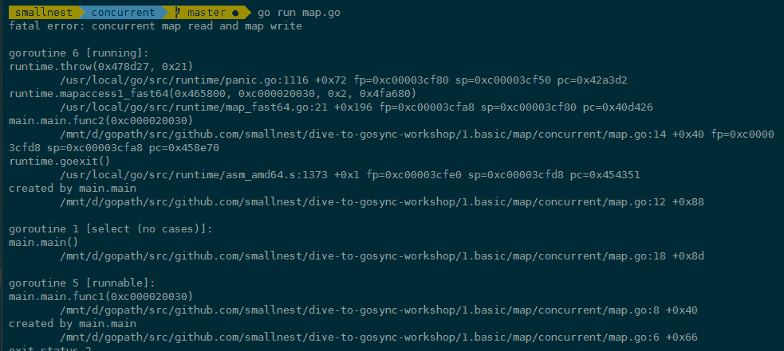
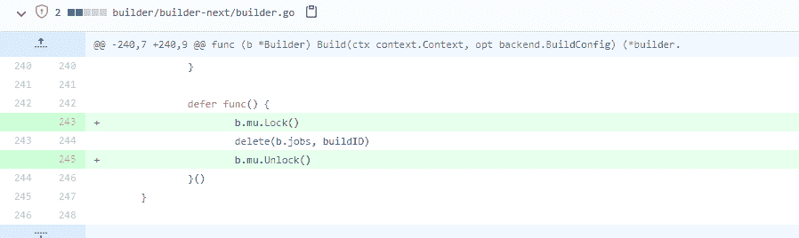
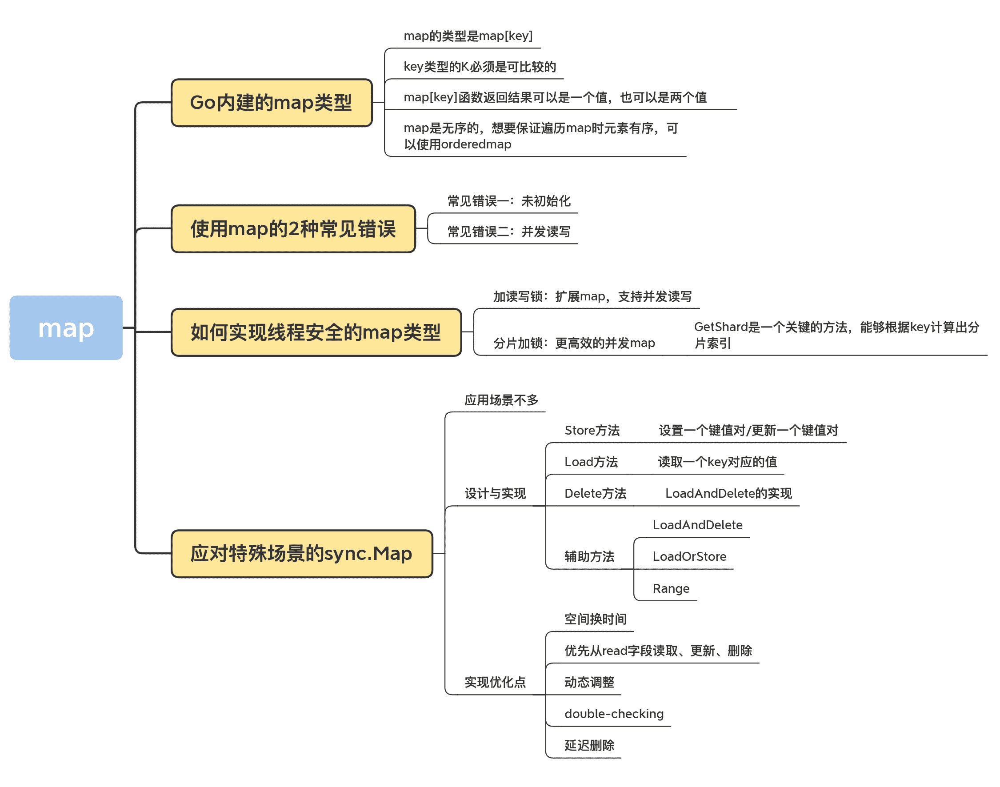

09 | map：如何實現線程安全的map類型？
你好，我是鳥窩。
哈希表（Hash Table）這個數據結構，我們已經非常熟悉了。它實現的就是 key-value 之間的映射關係，主要提供的方法包括 Add、Lookup、Delete 等。因為這種數據結構是一個基礎的數據結構，每個 key 都會有一個唯一的索引值，通過索引可以很快地找到對應的值，所以使用哈希表進行數據的插入和讀取都是很快的。Go 語言本身就內建了這樣一個數據結構，也就是 map 數據類型。
今天呢，我們就先來學習 Go 語言內建的這個 map 類型，瞭解它的基本使用方法和使用陷阱，然後再學習如何實現線程安全的 map 類型，最後我還會給你介紹 Go 標準庫中線程安全的 sync.Map 類型。學完了這節課，你可以學會幾種可以併發訪問的 map 類型。
map 的基本使用方法
Go 內建的 map 類型如下：
map[K]V
其中，key 類型的 K 必須是可比較的（comparable），也就是可以通過 == 和 != 操作符進行比較；value 的值和類型無所謂，可以是任意的類型，或者為 nil。
在 Go 語言中，bool、整數、浮點數、複數、字符串、指針、Channel、接口都是可比較的，包含可比較元素的 struct 和數組，這倆也是可比較的，而 slice、map、函數值都是不可比較的。
那麼，上面這些可比較的數據類型都可以作為 map 的 key 嗎？顯然不是。通常情況下，我們會選擇內建的基本類型，比如整數、字符串做 key 的類型，因為這樣最方便。
這裡有一點需要注意，如果使用 struct 類型做 key 其實是有坑的，因為如果 struct 的某個字段值修改了，查詢 map 時無法獲取它 add 進去的值，如下面的例子：
type mapKey struct {
key int
}
func main() {
var m = make(map[mapKey]string)
var key = mapKey{10}
m[key] = "hello"
fmt.Printf("m[key]=%s\n", m[key])
// 修改key的字段的值後再次查詢map，無法獲取剛才add進去的值
key.key = 100
fmt.Printf("再次查詢m[key]=%s\n", m[key])
}
那該怎麼辦呢？如果要使用 struct 作為 key，我們要保證 struct 對象在邏輯上是不可變的，這樣才會保證 map 的邏輯沒有問題。
以上就是選取 key 類型的注意點了。接下來，我們看一下使用 map[key]函數時需要注意的一個知識點。在 Go 中，map[key]函數返回結果可以是一個值，也可以是兩個值，這是容易讓人迷惑的地方。原因在於，如果獲取一個不存在的 key 對應的值時，會返回零值。為了區分真正的零值和 key 不存在這兩種情況，可以根據第二個返回值來區分，如下面的代碼的第 6 行、第 7 行：
func main() {
var m = make(map[string]int)
m["a"] = 0
fmt.Printf("a=%d; b=%d\n", m["a"], m["b"])
av, aexisted := m["a"]
bv, bexisted := m["b"]
fmt.Printf("a=%d, existed: %t; b=%d, existed: %t\n", av, aexisted, bv, bexisted)
}
map 是無序的，所以當遍歷一個 map 對象的時候，迭代的元素的順序是不確定的，無法保證兩次遍歷的順序是一樣的，也不能保證和插入的順序一致。那怎麼辦呢？如果我們想要按照 key 的順序獲取 map 的值，需要先取出所有的 key 進行排序，然後按照這個排序的 key 依次獲取對應的值。而如果我們想要保證元素有序，比如按照元素插入的順序進行遍歷，可以使用輔助的數據結構，比如orderedmap，來記錄插入順序。
好了，總結下關於 map 我們需要掌握的內容：map 的類型是 map[key]，key 類型的 K 必須是可比較的，通常情況下，我們會選擇內建的基本類型，比如整數、字符串做 key 的類型。如果要使用 struct 作為 key，我們要保證 struct 對象在邏輯上是不可變的。在 Go 中，map[key]函數返回結果可以是一個值，也可以是兩個值。map 是無序的，如果我們想要保證遍歷 map 時元素有序，可以使用輔助的數據結構，比如orderedmap。
使用 map 的 2 種常見錯誤
那接下來，我們來看使用 map 最常犯的兩個錯誤，就是未初始化和併發讀寫。
常見錯誤一：未初始化
和 slice 或者 Mutex、RWmutex 等 struct 類型不同，map 對象必須在使用之前初始化。如果不初始化就直接賦值的話，會出現 panic 異常，比如下面的例子，m 實例還沒有初始化就直接進行操作會導致 panic（第 3 行）:
func main() {
var m map[int]int
m[100] = 100
}
解決辦法就是在第 2 行初始化這個實例（m := make(map[int]int)）。
從一個 nil 的 map 對象中獲取值不會 panic，而是會得到零值，所以下面的代碼不會報錯:
func main() {
var m map[int]int
fmt.Println(m[100])
}
這個例子很簡單，我們可以意識到 map 的初始化問題。但有時候 map 作為一個 struct 字段的時候，就很容易忘記初始化了。
type Counter struct {
Website string
Start time.Time
PageCounters map[string]int
}
func main() {
var c Counter
c.Website = "baidu.com"
c.PageCounters["/"]++
}
所以，關於初始化這一點，我再強調一下，目前還沒有工具可以檢查，我們只能記住“別忘記初始化”這一條規則。
常見錯誤二：併發讀寫
對於 map 類型，另一個很容易犯的錯誤就是併發訪問問題。這個易錯點，相當令人討厭，如果沒有注意到併發問題，程序在運行的時候就有可能出現併發讀寫導致的 panic。
Go 內建的 map 對象不是線程（goroutine）安全的，併發讀寫的時候運行時會有檢查，遇到併發問題就會導致 panic。
我們一起看一個併發訪問 map 實例導致 panic 的例子：
func main() {
var m = make(map[int]int,10) // 初始化一個map
go func() {
for {
m[1] = 1 //設置key
}
}()
go func() {
for {
_ = m[2] //訪問這個map
}
}()
select {}
}
雖然這段代碼看起來是讀寫 goroutine 各自操作不同的元素，貌似 map 也沒有擴容的問題，但是運行時檢測到同時對 map 對象有併發訪問，就會直接 panic。panic 信息會告訴我們代碼中哪一行有讀寫問題，根據這個錯誤信息你就能快速定位出來是哪一個 map 對象在哪裡出的問題了。

這個錯誤非常常見，是幾乎每個人都會踩到的坑。其實，不只是我們寫代碼時容易犯這個錯，一些知名的項目中也是屢次出現這個問題，比如 Docker issue 40772，在刪除 map 對象的元素時忘記了加鎖：

Docker issue 40772，Docker issue 35588、34540、39643 等等，也都有併發讀寫 map 的問題。
除了 Docker 中，Kubernetes 的 issue 84431、72464、68647、64484、48045、45593、37560 等，以及 TiDB 的 issue 14960 和 17494 等，也出現了這個錯誤。
這麼多人都會踩的坑，有啥解決方案嗎？肯定有，那接下來，我們就繼續來看如何解決內建 map 的併發讀寫問題。
如何實現線程安全的 map 類型？
避免 map 併發讀寫 panic 的方式之一就是加鎖，考慮到讀寫性能，可以使用讀寫鎖提供性能。
加讀寫鎖：擴展 map，支持併發讀寫
比較遺憾的是，目前 Go 還沒有正式發佈泛型特性，我們還不能實現一個通用的支持泛型的加鎖 map。但是，將要發佈的泛型方案已經可以驗證測試了，離發佈也不遠了，也許發佈之後 sync.Map 就支持泛型了。
當然了，如果沒有泛型支持，我們也能解決這個問題。我們可以通過 interface{}來模擬泛型，但還是要涉及接口和具體類型的轉換，比較複雜，還不如將要發佈的泛型方案更直接、性能更好。
這裡我以一個具體的 map 類型為例，來演示利用讀寫鎖實現線程安全的 map[int]int 類型：
type RWMap struct { // 一個讀寫鎖保護的線程安全的map
sync.RWMutex // 讀寫鎖保護下面的map字段
m map[int]int
}
// 新建一個RWMap
func NewRWMap(n int) *RWMap {
return &RWMap{
m: make(map[int]int, n),
}
}
func (m *RWMap) Get(k int) (int, bool) { //從map中讀取一個值
m.RLock()
defer m.RUnlock()
v, existed := m.m[k] // 在鎖的保護下從map中讀取
return v, existed
}
func (m *RWMap) Set(k int, v int) { // 設置一個鍵值對
m.Lock() // 鎖保護
defer m.Unlock()
m.m[k] = v
}
func (m *RWMap) Delete(k int) { //刪除一個鍵
m.Lock() // 鎖保護
defer m.Unlock()
delete(m.m, k)
}
func (m *RWMap) Len() int { // map的長度
m.RLock() // 鎖保護
defer m.RUnlock()
return len(m.m)
}
func (m *RWMap) Each(f func(k, v int) bool) { // 遍歷map
m.RLock() //遍歷期間一直持有讀鎖
defer m.RUnlock()
for k, v := range m.m {
if !f(k, v) {
return
}
}
}
正如這段代碼所示，對 map 對象的操作，無非就是增刪改查和遍歷等幾種常見操作。我們可以把這些操作分為讀和寫兩類，其中，查詢和遍歷可以看做讀操作，增加、修改和刪除可以看做寫操作。如例子所示，我們可以通過讀寫鎖對相應的操作進行保護。
分片加鎖：更高效的併發 map
雖然使用讀寫鎖可以提供線程安全的 map，但是在大量併發讀寫的情況下，鎖的競爭會非常激烈。我在第 4 講中提到過，鎖是性能下降的萬惡之源之一。
在併發編程中，我們的一條原則就是儘量減少鎖的使用。一些單線程單進程的應用（比如 Redis 等），基本上不需要使用鎖去解決併發線程訪問的問題，所以可以取得很高的性能。但是對於 Go 開發的應用程序來說，併發是常用的一個特性，在這種情況下，我們能做的就是，儘量減少鎖的粒度和鎖的持有時間。
你可以優化業務處理的代碼，以此來減少鎖的持有時間，比如將串行的操作變成並行的子任務執行。不過，這就是另外的故事了，今天我們還是主要講對同步原語的優化，所以這裡我重點講如何減少鎖的粒度。
減少鎖的粒度常用的方法就是分片（Shard），將一把鎖分成幾把鎖，每個鎖控制一個分片。Go 比較知名的分片併發 map 的實現是orcaman/concurrent-map。
它默認採用 32 個分片，GetShard 是一個關鍵的方法，能夠根據 key 計算出分片索引。
var SHARD_COUNT = 32
// 分成SHARD_COUNT個分片的map
type ConcurrentMap []*ConcurrentMapShared
// 通過RWMutex保護的線程安全的分片，包含一個map
type ConcurrentMapShared struct {
items map[string]interface{}
sync.RWMutex // Read Write mutex, guards access to internal map.
}
// 創建併發map
func New() ConcurrentMap {
m := make(ConcurrentMap, SHARD_COUNT)
for i := 0; i < SHARD_COUNT; i++ {
m[i] = &ConcurrentMapShared{items: make(map[string]interface{})}
}
return m
}
// 根據key計算分片索引
func (m ConcurrentMap) GetShard(key string) *ConcurrentMapShared {
return m[uint(fnv32(key))%uint(SHARD_COUNT)]
}
增加或者查詢的時候，首先根據分片索引得到分片對象，然後對分片對象加鎖進行操作：
func (m ConcurrentMap) Set(key string, value interface{}) {
// 根據key計算出對應的分片
shard := m.GetShard(key)
shard.Lock() //對這個分片加鎖，執行業務操作
shard.items[key] = value
shard.Unlock()
}
func (m ConcurrentMap) Get(key string) (interface{}, bool) {
// 根據key計算出對應的分片
shard := m.GetShard(key)
shard.RLock()
// 從這個分片讀取key的值
val, ok := shard.items[key]
shard.RUnlock()
return val, ok
}
當然，除了 GetShard 方法，ConcurrentMap 還提供了很多其他的方法。這些方法都是通過計算相應的分片實現的，目的是保證把鎖的粒度限制在分片上。
好了，到這裡我們就學會了解決 map 併發 panic 的兩個方法：加鎖和分片。
在我個人使用併發 map 的過程中，加鎖和分片加鎖這兩種方案都比較常用，如果是追求更高的性能，顯然是分片加鎖更好，因為它可以降低鎖的粒度，進而提高訪問此 map 對象的吞吐。如果併發性能要求不是那麼高的場景，簡單加鎖方式更簡單。
接下來，我會繼續給你介紹 sync.Map，這是 Go 官方線程安全 map 的標準實現。雖然是官方標準，反而是不常用的，為什麼呢？一句話來說就是 map 要解決的場景很難描述，很多時候在做抉擇時根本就不知道該不該用它。但是呢，確實有一些特定的場景，我們需要用到 sync.Map 來實現，所以還是很有必要學習這個知識點。具體什麼場景呢，我慢慢給你道來。
應對特殊場景的 sync.Map
Go 內建的 map 類型不是線程安全的，所以 Go 1.9 中增加了一個線程安全的 map，也就是 sync.Map。但是，我們一定要記住，這個 sync.Map 並不是用來替換內建的 map 類型的，它只能被應用在一些特殊的場景裡。
那這些特殊的場景是啥呢？官方的文檔中指出，在以下兩個場景中使用 sync.Map，會比使用 map+RWMutex 的方式，性能要好得多：
- 只會增長的緩存系統中，一個 key 只寫入一次而被讀很多次；
- 多個 goroutine 為不相交的鍵集讀、寫和重寫鍵值對。
這兩個場景說得都比較籠統，而且，這些場景中還包含了一些特殊的情況。所以，官方建議你針對自己的場景做性能評測，如果確實能夠顯著提高性能，再使用 sync.Map。
這麼來看，我們能用到 sync.Map 的場景確實不多。即使是 sync.Map 的作者 Bryan C. Mills，也很少使用 sync.Map，即便是在使用 sync.Map 的時候，也是需要臨時查詢它的 API，才能清楚記住它的功能。所以，我們可以把 sync.Map 看成一個生產環境中很少使用的同步原語。
sync.Map 的實現
那 sync.Map 是怎麼實現的呢？它是如何解決併發問題提升性能的呢？其實 sync.Map 的實現有幾個優化點，這裡先列出來，我們後面慢慢分析。
- 空間換時間。通過冗餘的兩個數據結構（只讀的 read 字段、可寫的 dirty），來減少加鎖對性能的影響。對只讀字段（read）的操作不需要加鎖。
- 優先從 read 字段讀取、更新、刪除，因為對 read 字段的讀取不需要鎖。
- 動態調整。miss 次數多了之後，將 dirty 數據提升為 read，避免總是從 dirty 中加鎖讀取。
- double-checking。加鎖之後先還要再檢查 read 字段，確定真的不存在才操作 dirty 字段。
- 延遲刪除。刪除一個鍵值只是打標記，只有在提升 dirty 字段為 read 字段的時候才清理刪除的數據。
要理解 sync.Map 這些優化點，我們還是得深入到它的設計和實現上，去學習它的處理方式。
我們先看一下 map 的數據結構：
type Map struct {
mu Mutex
// 基本上你可以把它看成一個安全的只讀的map
// 它包含的元素其實也是通過原子操作更新的，但是已刪除的entry就需要加鎖操作了
read atomic.Value // readOnly
// 包含需要加鎖才能訪問的元素
// 包括所有在read字段中但未被expunged（刪除）的元素以及新加的元素
dirty map[interface{}]*entry
// 記錄從read中讀取miss的次數，一旦miss數和dirty長度一樣了，就會把dirty提升為read，並把dirty置空
misses int
}
type readOnly struct {
m map[interface{}]*entry
amended bool // 當dirty中包含read沒有的數據時為true，比如新增一條數據
}
// expunged是用來標識此項已經刪掉的指針
// 當map中的一個項目被刪除了，只是把它的值標記為expunged，以後才有機會真正刪除此項
var expunged = unsafe.Pointer(new(interface{}))
// entry代表一個值
type entry struct {
p unsafe.Pointer // *interface{}
}
如果 dirty 字段非 nil 的話，map 的 read 字段和 dirty 字段會包含相同的非 expunged 的項，所以如果通過 read 字段更改了這個項的值，從 dirty 字段中也會讀取到這個項的新值，因為本來它們指向的就是同一個地址。
dirty 包含重複項目的好處就是，一旦 miss 數達到閾值需要將 dirty 提升為 read 的話，只需簡單地把 dirty 設置為 read 對象即可。不好的一點就是，當創建新的 dirty 對象的時候，需要逐條遍歷 read，把非 expunged 的項複製到 dirty 對象中。
接下來，我們就深入到源碼去看看 sync.map 的實現。在看這部分源碼的過程中，我們只要重點關注 Store、Load 和 Delete 這 3 個核心的方法就可以了。
Store、Load 和 Delete 這三個核心函數的操作都是先從 read 字段中處理的，因為讀取 read 字段的時候不用加鎖。
Store 方法
我們先來看 Store 方法，它是用來設置一個鍵值對，或者更新一個鍵值對的。
func (m *Map) Store(key, value interface{}) {
read, _ := m.read.Load().(readOnly)
// 如果read字段包含這個項，說明是更新，cas更新項目的值即可
if e, ok := read.m[key]; ok && e.tryStore(&value) {
return
}
// read中不存在，或者cas更新失敗，就需要加鎖訪問dirty了
m.mu.Lock()
read, _ = m.read.Load().(readOnly)
if e, ok := read.m[key]; ok { // 雙檢查，看看read是否已經存在了
if e.unexpungeLocked() {
// 此項目先前已經被刪除了，通過將它的值設置為nil，標記為unexpunged
m.dirty[key] = e
}
e.storeLocked(&value) // 更新
} else if e, ok := m.dirty[key]; ok { // 如果dirty中有此項
e.storeLocked(&value) // 直接更新
} else { // 否則就是一個新的key
if !read.amended { //如果dirty為nil
// 需要創建dirty對象，並且標記read的amended為true,
// 說明有元素它不包含而dirty包含
m.dirtyLocked()
m.read.Store(readOnly{m: read.m, amended: true})
}
m.dirty[key] = newEntry(value) //將新值增加到dirty對象中
}
m.mu.Unlock()
}
可以看出，Store 既可以是新增元素，也可以是更新元素。如果運氣好的話，更新的是已存在的未被刪除的元素，直接更新即可，不會用到鎖。如果運氣不好，需要更新（重用）刪除的對象、更新還未提升的 dirty 中的對象，或者新增加元素的時候就會使用到了鎖，這個時候，性能就會下降。
所以從這一點來看，sync.Map 適合那些只會增長的緩存系統，可以進行更新，但是不要刪除，並且不要頻繁地增加新元素。
新加的元素需要放入到 dirty 中，如果 dirty 為 nil，那麼需要從 read 字段中複製出來一個 dirty 對象：
func (m *Map) dirtyLocked() {
if m.dirty != nil { // 如果dirty字段已經存在，不需要創建了
return
}
read, _ := m.read.Load().(readOnly) // 獲取read字段
m.dirty = make(map[interface{}]*entry, len(read.m))
for k, e := range read.m { // 遍歷read字段
if !e.tryExpungeLocked() { // 把非punged的鍵值對複製到dirty中
m.dirty[k] = e
}
}
}Load 方法Load 方法用來讀取一個 key 對應的值。它也是從 read 開始處理，一開始並不需要鎖。
func (m *Map) Load(key interface{}) (value interface{}, ok bool) {
// 首先從read處理
read, _ := m.read.Load().(readOnly)
e, ok := read.m[key]
if !ok && read.amended { // 如果不存在並且dirty不為nil(有新的元素)
m.mu.Lock()
// 雙檢查，看看read中現在是否存在此key
read, _ = m.read.Load().(readOnly)
e, ok = read.m[key]
if !ok && read.amended {//依然不存在，並且dirty不為nil
e, ok = m.dirty[key]// 從dirty中讀取
// 不管dirty中存不存在，miss數都加1
m.missLocked()
}
m.mu.Unlock()
}
if !ok {
return nil, false
}
return e.load() //返回讀取的對象，e既可能是從read中獲得的，也可能是從dirty中獲得的
}
如果幸運的話，我們從 read 中讀取到了這個 key 對應的值，那麼就不需要加鎖了，性能會非常好。但是，如果請求的 key 不存在或者是新加的，就需要加鎖從 dirty 中讀取。所以，讀取不存在的 key 會因為加鎖而導致性能下降，讀取還沒有提升的新值的情況下也會因為加鎖性能下降。
其中，missLocked 增加 miss 的時候，如果 miss 數等於 dirty 長度，會將 dirty 提升為 read，並將 dirty 置空。
func (m *Map) missLocked() {
m.misses++ // misses計數加一
if m.misses < len(m.dirty) { // 如果沒達到閾值(dirty字段的長度),返回
return
}
m.read.Store(readOnly{m: m.dirty}) //把dirty字段的內存提升為read字段
m.dirty = nil // 清空dirty
m.misses = 0 // misses數重置為0
}Delete 方法sync.map 的第 3 個核心方法是 Delete 方法。在 Go 1.15 中歐長坤提供了一個 LoadAndDelete 的實現（go#issue 33762），所以 Delete 方法的核心改在了對 LoadAndDelete 中實現了。
同樣地，Delete 方法是先從 read 操作開始，原因我們已經知道了，因為不需要鎖。
func (m *Map) LoadAndDelete(key interface{}) (value interface{}, loaded bool) {
read, _ := m.read.Load().(readOnly)
e, ok := read.m[key]
if !ok && read.amended {
m.mu.Lock()
// 雙檢查
read, _ = m.read.Load().(readOnly)
e, ok = read.m[key]
if !ok && read.amended {
e, ok = m.dirty[key]
// 這一行長坤在1.15中實現的時候忘記加上了，導致在特殊的場景下有些key總是沒有被回收
delete(m.dirty, key)
// miss數加1
m.missLocked()
}
m.mu.Unlock()
}
if ok {
return e.delete()
}
return nil, false
}
func (m *Map) Delete(key interface{}) {
m.LoadAndDelete(key)
}
func (e *entry) delete() (value interface{}, ok bool) {
for {
p := atomic.LoadPointer(&e.p)
if p == nil || p == expunged {
return nil, false
}
if atomic.CompareAndSwapPointer(&e.p, p, nil) {
return *(*interface{})(p), true
}
}
}
如果 read 中不存在，那麼就需要從 dirty 中尋找這個項目。最終，如果項目存在就刪除（將它的值標記為 nil）。如果項目不為 nil 或者沒有被標記為 expunged，那麼還可以把它的值返回。
最後，我補充一點，sync.map 還有一些 LoadAndDelete、LoadOrStore、Range 等輔助方法，但是沒有 Len 這樣查詢 sync.Map 的包含項目數量的方法，並且官方也不準備提供。如果你想得到 sync.Map 的項目數量的話，你可能不得不通過 Range 逐個計數。
總結
Go 內置的 map 類型使用起來很方便，但是它有一個非常致命的缺陷，那就是它存在著併發問題，所以如果有多個 goroutine 同時併發訪問這個 map，就會導致程序崩潰。所以 Go 官方 Blog 很早就提供了一種加鎖的方法，還有後來提供了適用特定場景的線程安全的 sync.Map，還有第三方實現的分片式的 map，這些方法都可以應用於併發訪問的場景。
這裡我給你的建議，也是 Go 開發者給的建議，就是通過性能測試，看看某種線程安全的 map 實現是否滿足你的需求。
當然還有一些擴展其它功能的 map 實現，比如帶有過期功能的timedmap、使用紅黑樹實現的 key 有序的treemap等，因為和併發問題沒有關係，就不詳細介紹了。這裡我給你提供了鏈接，你可以自己探索。

思考題
- 為什麼 sync.Map 中的集合核心方法的實現中，如果 read 中項目不存在，加鎖後還要雙檢查，再檢查一次 read？
- 你看到 sync.map 元素刪除的時候只是把它的值設置為 nil，那麼什麼時候這個 key 才會真正從 map 對象中刪除？
歡迎在留言區寫下你的思考和答案，我們一起交流討論。如果你覺得有所收穫，也歡迎你把今天的內容分享給你的朋友或同事。